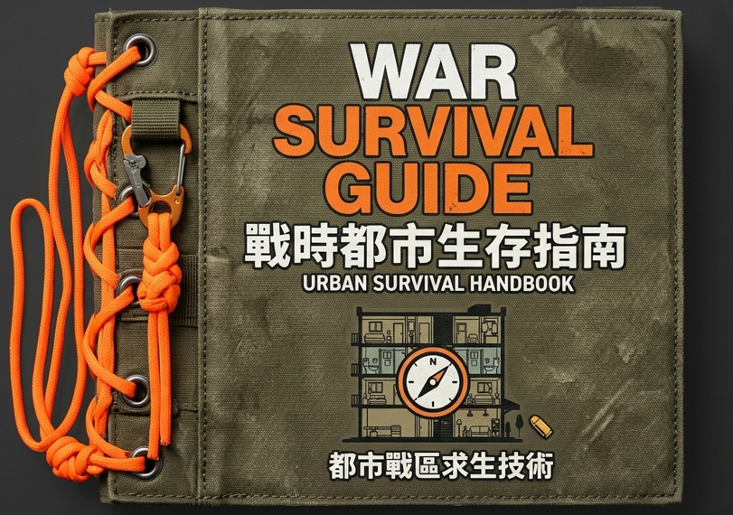
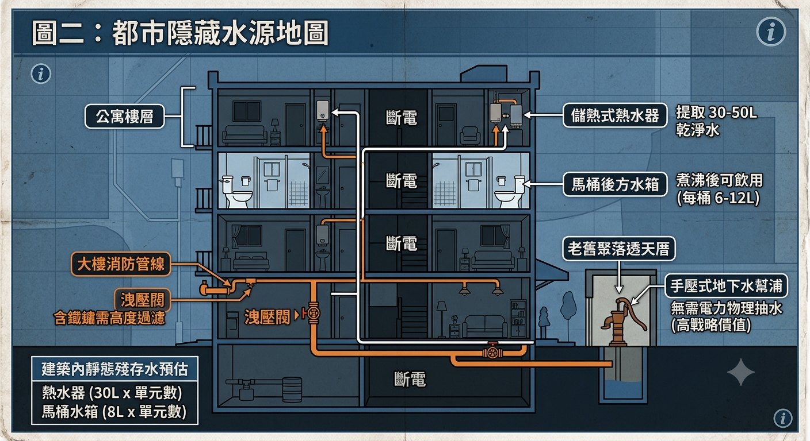
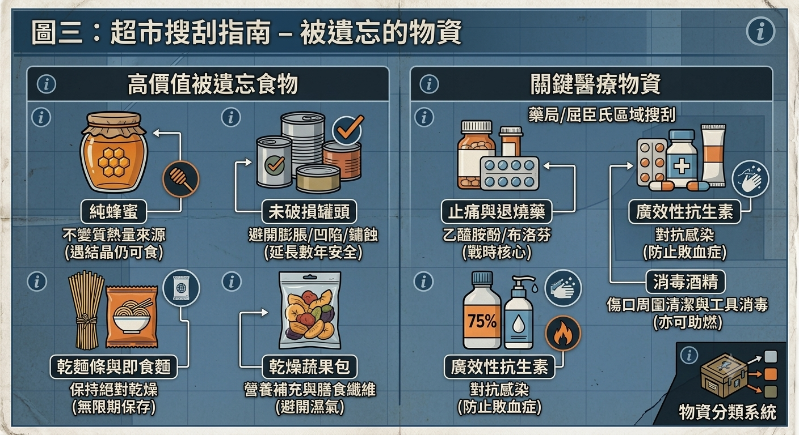
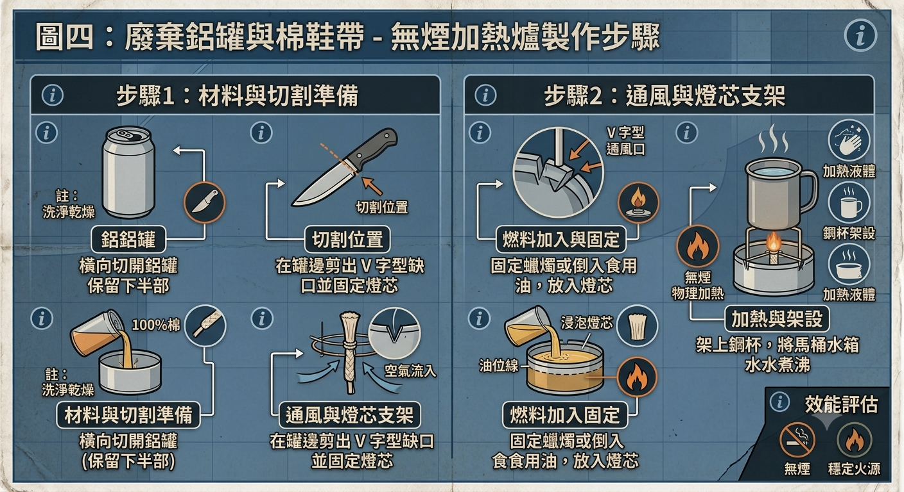
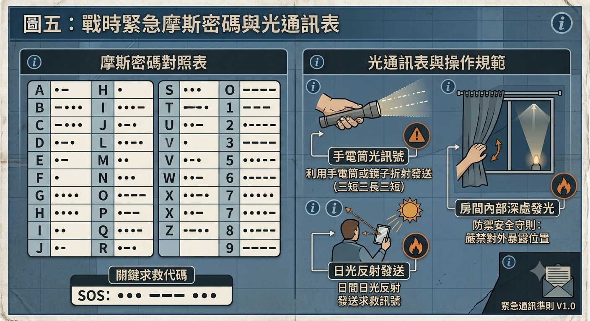

戰爭都市生存指南
[ 電子書 1.0 離線安全認證版 / LOCAL DATA ONLY ]

前言：當日常成為戰場
這不是一本寫給特種部隊的軍事教材，而是一本寫給生活在水泥叢林中、手無寸鐵的普通人的「存續手冊」。
長年以來，地緣政治的陰影始終籠罩著台灣。我們習慣了 24 小時便利商店、充足的電力、轉開就有自來水的生活，並且極度依賴智慧型手機與網路。然而，一旦地緣政治衝突演變成實體戰爭，現代化的城市系統將會在 48 小時內發生連鎖反應式的崩潰。
當飛彈襲擊、網路底層基礎設施（如海底電纜、基地台）遭到實體破壞、國家電網癱瘓，城市將瞬間陷入「數位真空」與「孤島化」。電子支付失效（手頭的數位資產歸零）、GPS 失靈、物流鏈斷裂、超商貨架被迅速清空。
大部分的生存書籍都教你如何在野外鑽木取火、搭建樹屋或辨識野生植物。但在台灣，超過 80% 的人居住在都市。當你受困在 12 樓的租屋套房，身邊只有幾坪大的空間，甚至連一把螺絲起子都沒有時，野外求生知識對你毫無幫助。
你必須學會「都市生存」的邏輯。城市並非荒野，它是一個巨大的資源倉庫，只是它們不再以「商品」的形式存在。本指南將帶你拋棄數位依賴，在文明停擺的極端環境下，利用都市廢棄物與建築結構，奪回你的生存權。
第一章：數位真空下的隱藏水源
戰爭爆發後，自來水廠通常會因為斷電或基礎設施受損而停止供水。在沒有網路、無法購買瓶裝水的情況下，你必須在脫水致命的「黃金 3 天」內，從建築與城市設施中挖掘出隱藏的「靜態儲水」。
1.1 建築內的「靜態殘存水」
在停水初期，大樓管線與家電中仍存有大量未受污染的乾淨水，這是你的優先目標：
- 儲熱式熱水器： 這是都市公寓中最大的「隱藏水壺」。一台家用熱水器通常存有 30 至 50 公升的乾淨水。只要關閉進水閥（防止外部受污染的水倒流），打開底部的洩水閥或出水口即可取水。
- 馬桶後方水箱： 注意，是後方的方正水箱，而非馬桶池。只要平時沒有放置化學清潔劑（如藍藍香），水箱內的水煮沸後完全可以飲用（每桶約有 6 至 12 公升）。
- 大樓消防管線與灑水系統：** 建築物的消防管線中常年充滿加壓水。透過低樓層或地下室的消防洩壓閥，可以排出一部分積水。（*注意：此水源可能含有大量鐵鏽，必須高度過濾與煮沸。*）

1.2 城市公共設施與自然採集
- 辦公大樓與學校飲水機： 辦公大樓多半使用大型桶裝水（每桶約 19 公升）或備有大型儲水槽。在停電後，雖然控制面板無法運作，但可以直接拆開外殼或用物理方式破壞管道取水。
- 晨露收集法（都市版）：** 在公寓頂樓或水泥天台上，利用保鮮膜或乾淨的塑料袋覆蓋盆栽植物或雜草，利用植物的蒸散作用，可以在袋內收集到極為乾淨的蒸餾水。
- 在地化物理水井：** 以中南部都市邊緣（如嘉義民雄等舊聚落地區）為例，許多老舊透天厝、廟宇周邊或舊農地旁，仍保有傳統的手壓式地下水幫浦。在電力癱瘓的世界，這種不需要電力的物理抽水工具具有最高的戰略價值。
第二章：走進超市與街道，尋找被遺忘的物資
衝突爆發後，超市與大賣場會在第一時間遭到恐慌性搶購。當主流物資被搜刮一空後，你必須學會辨識那些「被一般人遺忘、但極具價值」的資源。

2.1 過期品真相：哪些食物過期了還能吃？
在資源極度匱乏時，食品包裝上的「有效期限」不再是絕對標準，你必須了解食物的物理特性：
- 純蜂蜜：** 只要沒有混入水分，純蜂蜜的滲透壓極高、水分極低，細菌無法繁殖。即使過了包裝上的期限，它依然是完美的熱量來源，且永遠不會變質。
- 未破損的罐頭：** 罐頭在製造時已經過高溫殺菌與真空密封。只要罐體沒有**膨脹（鼓起）、嚴重凹陷、或是鏽蝕穿孔**，即便過期數年，內部的食物依然保持無菌安全。
- 乾麵條與義大利麵：** 只要儲存環境保持絕對乾燥，沒有發霉或長蟲，純乾麵條可以近乎無限期保存。
2.2 藥品與急救：戰時的三大核心醫療物資
- 止痛藥（乙醯胺酚/布洛芬）：** 不僅僅是止痛，更重要的是**退燒**。在缺乏醫療照顧時，持續的高燒會摧毀人體免疫力。
- 廣效性抗生素：** 用於對抗傷口發炎與細菌感染。戰時最常見的死因之一，往往是皮膚被瓦礫割傷後引發的敗血症。
- 高濃度消毒酒精：** 用於傷口周圍清潔與醫療工具的物理消毒。在極端情況下，酒精也可以作為引火的燃料。
2.3 工具再造：如何用鋁罐與蠟燭做出簡易加熱爐
當瓦斯中斷、電力全無時，生火煮水成了難題。你不能在室內隨便燒木頭（會因濃煙窒息或暴露位置）。你可以利用都市隨處可見的垃圾製造「無煙加熱爐」：

- 用美工刀將鋁罐從中間橫向切開，保留下半部（做成一個小碗狀）。
- 在鋁罐下半部的邊緣，對稱地剪出幾處小的 V 字型缺口（這是為了讓空氣流通，防止火熄滅）。
- 將短蠟燭固定在中心點燃；或者在罐內倒入食用油（如沙拉油），放入一截棉質鞋帶作為燈芯並點燃。
- 將不鏽鋼鋼杯架在有缺口的鋁罐上。這個簡易的物理爐具足以在 10 分鐘內將一小杯水煮沸。
第三章：低科技通訊與信號防禦
當現代通訊（4G/5G/Wi-Fi）因戰爭中斷，城市裡的大樓將成為一座座資訊孤島。掌握低科技的物理通訊，是與外界建立連繫、發出求救訊號的唯一手段。
3.1 摩斯密碼與光信號對照表
利用手電筒、鏡子反射陽光、或是敲擊大樓水管，可以傳遞關鍵的英文字母。以下為戰時最核心的求救對照代碼：

3.2 光信號發送與安全守則
- SOS 國際求救訊號： 三短光（···）、三長光（---）、三短光（···）。重複此循環。
- 光源選擇：** 智慧型手機的補光燈雖然亮度高，但耗電極快。在長期斷電下，應優先使用傳統**LED手電筒**，或拆卸手錶、碎裂的手機螢幕反射太陽光（無能耗通訊）。
- 防禦守則：** 發送信號時，切勿直接暴露出自己的具體窗口位置。建議在房間內部深處向外照射，或利用鏡子折射，避免被敵方偵查或引來不法之徒。